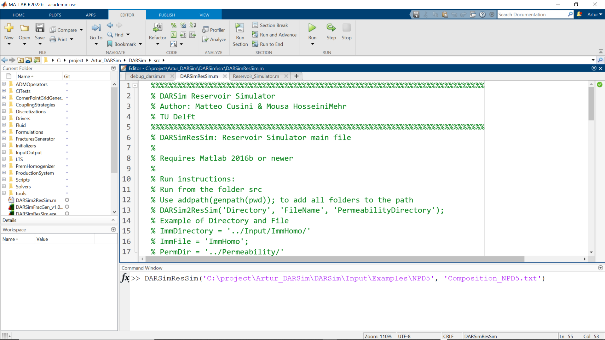
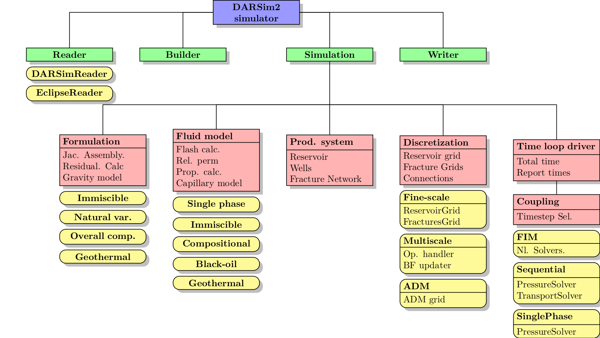
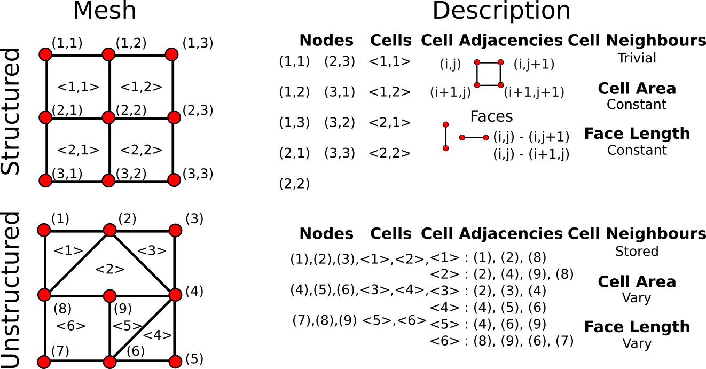
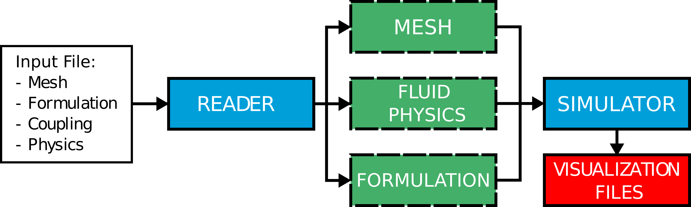
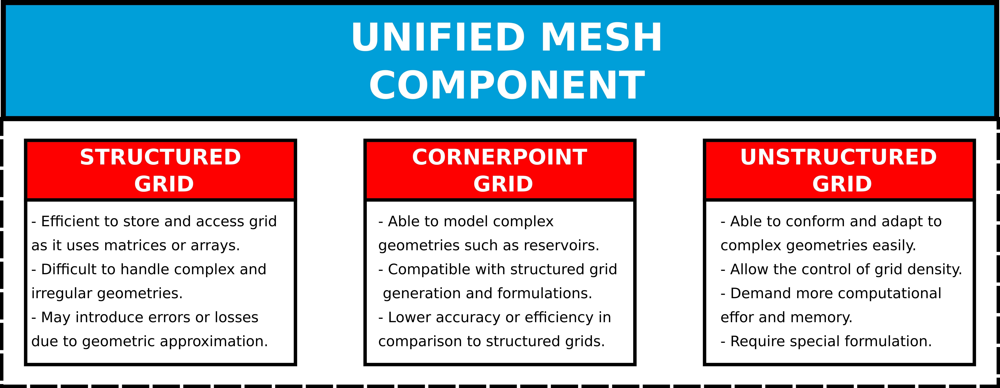

DARSim 3.0 Project
Artur Castiel Reis de Souza, PhD
-
This is an ADMIRE research group internal document and it is solely intended for evaluating the author’s programming skills as part of the TNO recruitment process.
ADMIRE Group,TU Delft
03 May 2023
DARSim Overview
DARSim is an open-source multipurpose MATLAB based 3D reservoir simulator aimed to increase the speed of prototyping and researching, as well as providing a new environment to test new ideas in the multiphase flow in natural subsurface formation context.

- Well documented, easy to learn prototype framework.
- Multiphysics: Single Phase, Immiscible, Compositional, Black-oil, Geothermical and so on.
- Discretization types: Structured Grids and Cornerpoint Grids.
- Coupling: IMPES, SEQ Implicit and Fully Implicity.
Structure of Darsim

DARSim’s current issues
DARSim has overgrown its own data structure becoming a collection of independent simulators with coupling issues.
Code Complexity: The code structure has become unnecessarily complicated, making it hard to read and impacting its overall maintainability.
Code Coupling: The objects/classes within the code are strongly interconnected, due to the improper use of Object Oriented programming concepts.
Code Maintainability: Right now, there is no source code management system applied to the project. This has spawn several variations of DARSIM code not compatible with each other.
Code lacks scalability!
What is code scalability?
- Code scalability refers to the ability of code to handle increasing amounts of work, users, developers, or data without experiencing a significant decrease in performance or an increase in difficulty to code for.
- A scalable code is a code that can grow and adapt to changing demands without breaking or becoming sluggish.
- Scalability is an important feature that needs to be considered for software development in general. Scalable code allows us to save time and money in the long run by reducing the need for refactoring the code or redesigns the system once new features are added.
The concept of scalability is intrinsically related to the data structure choosed for the project!
What is a data structure?
- Data structures refer to a specific method of organizing and storing data in a program or system. They aim to simplify data handling and improve data access, search, and modification efficiency.
- Data structures are closely linked to the program’s workflow, developer experience, code performance, and scalability. Selecting the most suitable data structure can significantly impact program efficiency and scalability.
- Designing the optimal data structure requires careful consideration of the specific problem requirements, data type, and operations involved. Different data structures are best suited for different tasks, and selecting the appropriate one is essential.
Examples of data structure to represent meshes
A basic abstraction model for a simulator

In an ideal world, all code is split into components!
What is code componentization?
Code componentization is the process of breaking down a complex software system into smaller, reusable, and independent units of code. These units are called components, and they can be composed together to form larger applications. Some benefits of code componentization are:
Modularity: Components can be developed, tested, and maintained separately from each other, reducing complexity and improving quality.
Reusability: Components can be reused across different projects or contexts, saving time and resources.
Extensibility: Components can be easily added, removed, or replaced without affecting the rest of the system, enabling flexibility and innovation.
Maintainability: Components can be updated or fixed without impacting other components, facilitating bug fixing and feature development.
Code componentization examples
Reader: A set of classes and methods that read input files create the data structure that defines all inputs required to perform the simulation.
Grid components: A set of classes and methods that define the spatial discretization of the reservoir domain and the properties of each grid cell.
Flow components: A set of functions and algorithms that calculate the fluid flow and transport in the reservoir, based on the grid components and the input parameters.
Output components: A set of modules and interfaces that generate and display the simulation results, such as graphs, tables, maps, or animations.
Control components: A set of tools and commands that allow the user to configure, run, pause, resume, or stop the simulation, as well as modify the input parameters or the grid components during runtime.
DARSim 2.0 structure again
How to solve DARSIM’s issues?
1 - Unifying Mesh Structure under a single component

How to solve DARSIM’s issues?
2 - Defining a new code structure

How to solve DARSIM’s issues?
3 - Creating some code guidelines
- Object Interconnections: needs to be clearly defined. The interface between functions, classes objects and its dependencies must be always evident.
- Collaboration Challenges can be solved by establishing a base version and using control version tools such as git.
- Code Comprehension can be improved by defining rules for clear naming of variables, functions, classes and objects
- Modify Routines to ensure the correct application of Object Oriented programming concepts.
How to solve DARSIM’s issues?
4 - Creating a New Coding Culture
Code is not just a byproduct, it is a noble part of research. We must create coding culture to allow DARSim to scale.
Creation of ADMIRE’s group codeing guideline: The development of a documentation to teach new students best programmigng practise that give basic guidelines helping the students understand DARSim and to improve thee quality of their code. We need to debate better code practices.
Test driven deployment: Tests are required for verifying the code’s accuracy and reliability, ensuring that code modifications don’t introduce bugs or break existing functionality.
Each developer code needs to pass set of tests aimed to demonstrate its robustness and to ensure thi code will not break anything else.
Only if the refactored code passes in all tests it will be added to the main branch.
Moreover, the developer needs to create a set of benchmark cases and tests aimed at demonstrating and testing key parts of the code, i.e. mass conservation, benchmarking cases accuracy.
How to solve DARSIM’s issues?
5 - Train the team
Git: A version control system that allows you to track changes, collaborate with others, and manage your code projects.
Object Oriented Programming: paradigm that organizes data and behavior into classes and objects, and defines interactions using inheritance, polymorphism, and encapsulation.
DARSim’s coding guidelines: Rules and conventions for writing DARSIMs code, such as using consistent indentation, naming, documentation, and testing.
MATLAB best practices: Guidelines and tips for clear, efficient, and maintainable Matlab code, such as using meaningful names, and commenting.
Code vectorization: A technique that speeds up code execution by applying operations to arrays or vectors instead of scalars or elements.
In conclusion
- With DARSim 3.0, we expect to decrease steep learning curve that takes for students to start developing for it.
- This new version will alow the code to continue to grow at the same speed research takes place.
- It is expected to have gain in performance on simulation time.
- The code will be easier to maintain.
- We expect to a programming culture that will help students to design better code.
Find me at A.CastielReisdeSouza@tudelft.nl and https://arturcastiel.github.io/